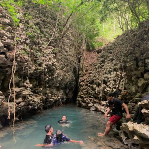

GALERI FOTO


Satu lagi yang tak boleh dilewatkan ketika mengunjungi Rammang Rammang, sebuah surga kecil yang bersembunyi dibalik bebatuan karst, yaitu kolam alam yang terkenal dengan sebutan telaga bidadari. Menurut kepercayaan masyarakat sekitar, tempat ini adalah jalan para bidadari, alasannya karena penampakan pelangi di permukaan air dan dinding – dinding karst diyakini sebagai jalan ke bumi. Ada pula cerita rakyat yang mengatakan jika bepergian ke tempat ini lalu bertemu lawan jenis yang dikenal, kemudian terjatuh ke dalam telaga secara tidak sengaja artinya pintu jodoh terbuka.